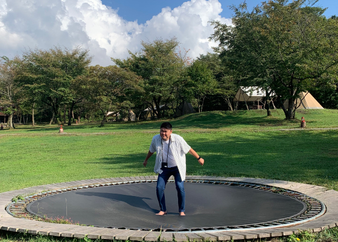

About me 自己紹介
Maeda Ken Maeda Ken

デザインで見てくださる方々の「感情」を動かすだけでなく、温度差を肌で感じ取った様に質感も与えられるようなデザイナーを目指しています。
Characterstics
私の特徴
からだの大きさのイメージとは違い、周りの方からはおっとりとした温厚な性格だとよく言われます。
元々はネットワークエンジニアとしてネットワーク機器の設定、設置、保守を行っておりました。
趣味では、セメントとレジンを使用した制作活動とバレーボールをしております。
Attitude
デザインに対する姿勢
デザインフェスタなどのイベントに参加しておりました。そこで新たなデザインとは２つの物の組み合わせで生まれることを学びました。
以来から主にイベントにてクリエイターの方の新しい発見や発想力に触れ、Web製作に活かせれるように意識しております。
Ideal designer
理想のデザイナー像
デザインも日々学ぶことはもちろんですが、私が一番大事にしたいのはクライアントの方との繋がりです。
クライアントの意見を丁寧に聞くだけではなく、こちらからも提案でき、信頼を得て頼られるデザイナーになりたいと思います。
S ills
学んだスキル
design
- レイアウト、配色、フォント、画像の扱いなどに対する基礎知識
- Illustratorを使用したバナー制作、ロゴ制作
- Photoshopを使用した写真のレタッチ、合成
- Figmaを使用したWebデザインの作成
coding
- HTML/CSS/jQueryを使用したコーディング
Career
経歴
-
NOW
Webデザイナーを目指し転職活動中
-
2020年/9月
Webデザイナーを目指し学習開始
-
2020年/8月
株式会社ダイレクトウェイヴ退職
-
2015年/4月
株式会社ダイレクトウェイヴ入社
ネットワークエンジニアとして活躍 -
2015年/4月
岡山情報ビジネス学院 情報システム学科卒業
-
1994年/12月
岡山県生まれ